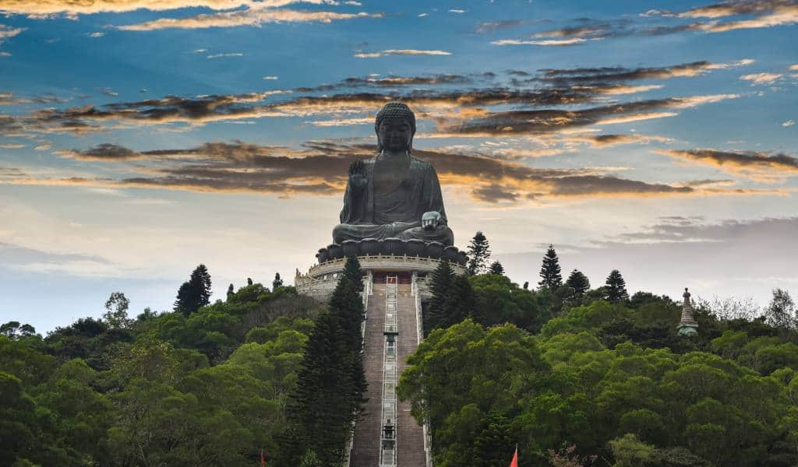
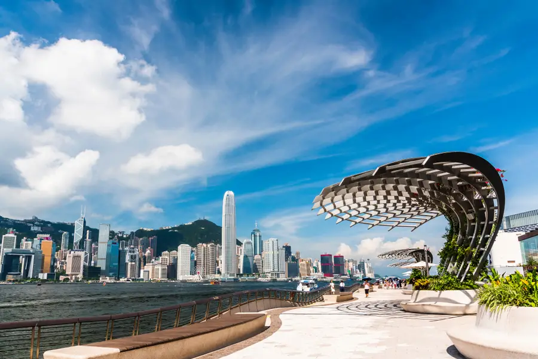
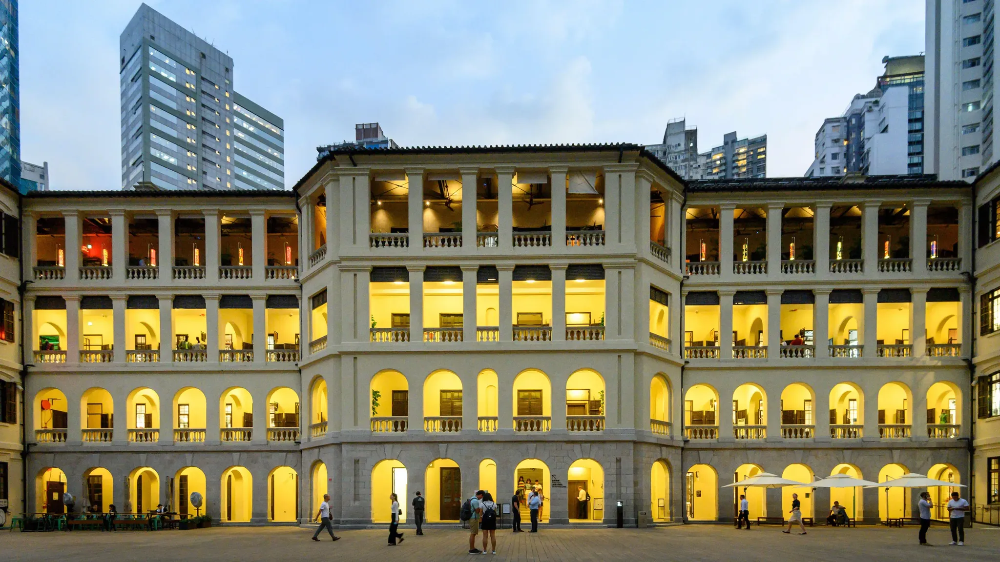
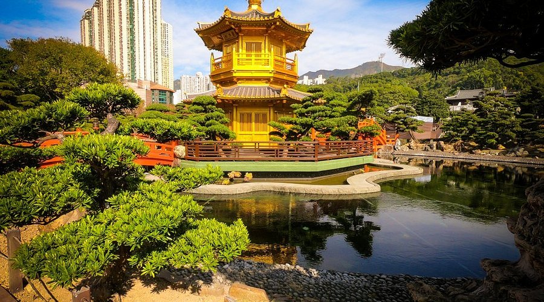
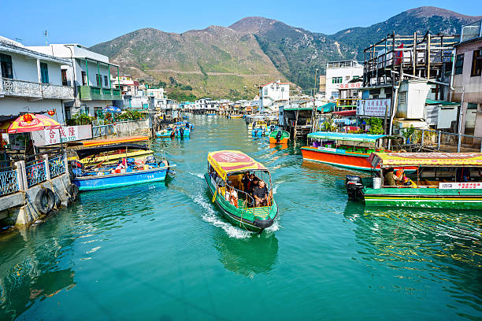
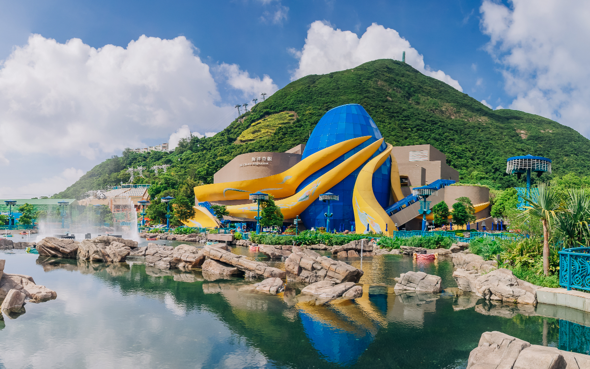

The Avenue of Stars is a popular waterfront promenade in Tsim Sha Tsui.

Lantau Island
Lantau Island featuring a 5.7 km cable car ride between Tung Chung and Ngong Ping.
Hong Kong Disneyland
Hong Kong Disneyland is a charming, family-friendly theme park on Lantau Island featuring unique attractions, magical themed lands
Victoria Peak
Victoria Peak, also known as The Peak, is the highest point on Hong Kong Island, offering panoramic views of the city skyline, Victoria Harbour, and surrounding mountains.

Victoria Harbour
Victoria Harbour is a natural deep-water harbour separating Hong Kong Island from Kowloon, famous for its skyline views, maritime traffic, and the nightly light show, A Symphony of Lights.

Tai Kwun
Tai Kwun is a restored heritage complex in Central Hong Kong that combines museums, art galleries, historic buildings, and dining spaces.

Nan Lian Garden
Nan Lian Garden is a peaceful Tang-style Chinese garden known for its golden pavilion, scenic bridges, and perfectly manicured landscapes.

Tai O Fishing Village
Tai O Fishing Village is a historic stilt-house community known for its traditional fishing culture, narrow lanes, and famous local seafood products.

Ocean Park. Marine Theme Park
Ocean Park Hong Kong is a marine-themed amusement park featuring animal exhibits, thrill rides, ocean-life attractions, and scenic cable car views.
.png)